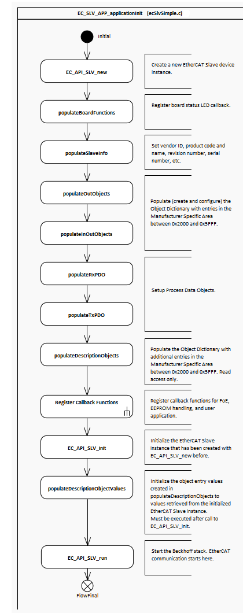

EtherCAT Slave1.12.02 |
 |


|
EtherCAT Slave1.12.02 |
|
|
This example demonstrates the steps to configure the hardware, create the basic EtherCAT Slave information as well as the Object Dictionary and the Process Data configuration.
The example starts by initializing operating system (OSAL) and hardware abstraction layers (HWAL). The EtherCAT functionality itself is implemented within the Appl_LoopTask that is started from the main application entry point, both are implemented in EtherCAT_Slave_Simple.c.
Before entering the main stack loop, the example application itself is initialized in EC_SLV_APP_applicationInit. This function creates a new EtherCAT Slave device instance, registers a board status LED callback, sets vendor ID, product code and name, revision number, etc.

|
Next various objects are created in the Object Dictionary of the EtherCAT Slave device. These objects are used to display information related to the device or used to map them as Process Data. These objects are declared in the Manufacturer Specific Area, whereas the CoE Communication Area objects are created automatically by the SDK.
RXPDO configuration
TXPDO configuration
Objects 0x200C and 0x200E are used to demonstrate CoE callback functions. These callbacks, sendEoEFrame and sendEmergencyMsg are deactivated by default in order to pass the EtherCAT Conformance Tests, however, these may be used as write parameter of the stated objects. Using these callback functions, the example application sends an EoE frame or a CoE emergency message with the data written to them. See the code snippet below:
Once the Object Dictionary is configured, Process Data are defined. The function EC_SLV_APP_populateRxPDO() is used to generate the output PDOs and EC_SLV_APP_populateTxPDO() to generate the input PDOs. By default, the SDK sets the PDO assignment fixed, meaning that a PDO generated by the application is attached to a SyncManager and this configuration cannot be changed. However, it allows by default to modify the PDO entry content. To change these behaviours refer to EC_API_SLV_PDO_setFixedMapping() and EC_API_SLV_PDO_setAssignment() functions.
The EC_API_SLV_init() function initializes the SDK Stack and validates whether the user defined configuration is valid or not. If the EtherCAT configuration is valid, then object content can be written and finally, the EC_API_SLV_run() function starts the Beckhoff Stack.
 1.9.1
1.9.1